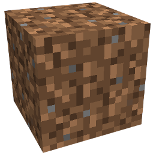
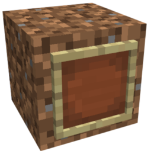
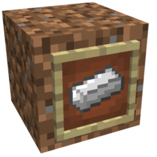
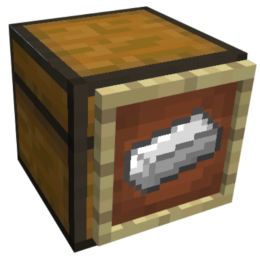
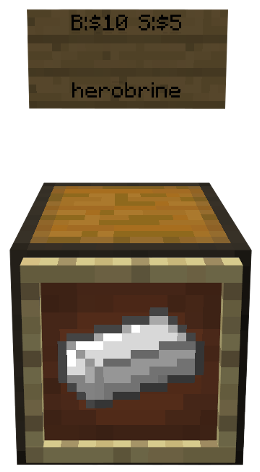
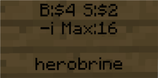
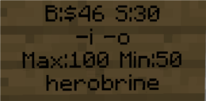

How to use shops
Using shops is as simple as using a chest. Taking an item = buying it. Putting an item in the chest = selling it. The only difference is that you can buy one item by right-clicking the stack in the chest.
How to set up shops
Place any block except chests, furnaces, or anything else that opens an inventory when you right click it.

Place an Item Frame on the block.

Put an item in the frame, the shop will sell/ buy this item.

Left-click (hit) the block while holding a chest, this wil replace the block with a chest.

Place a sign above the chest and write B:$<price> or S:$<price> or both on it, e.g. B:$10 S:$5. You can write this on any line except the last one as it will be used for the username.

Put items in the chest if you want to sell them.
Make sure to protect your chest with /cpublic so that others can't destory it
Parameters
Every shops requires at least one of B: or S: (else you could neither buy nor sell), they can have both.
- B:$<price> e.g. B:$10 - Price customers can buy items for
- S:$<price> e.g. S:$5 - Price customers can sell items for
Optional:
- Min:<amount> e.g. Min:10 - The minimal amount of items in a shop, when it is reached customers won't be able to buy
- Max:<amount> e.g. Max:128 - The maximal amount of items in a shop, when it is reached customers won't be able to sell
Min/ Max can be useful when selling expensive items to prevent players who have a lot of items from bankrupting you.
- -i - You won't be informed when someone uses your shop
- -o - While you're offline no one can use your shop
Remember not to put any of these parameters in the last line as it's used for the username.
Examples
A shop buying items for $4 and selling them for $2, the owner is not informed when customers use the shop, the shop can't contain more than 16 items.

A shop buying items for $46 and selling them for $30, the owner is not informed when customers use the shop, customers can't use the shop when the owner is offline, the shop can't contain more than 100 or less than 50 items.
